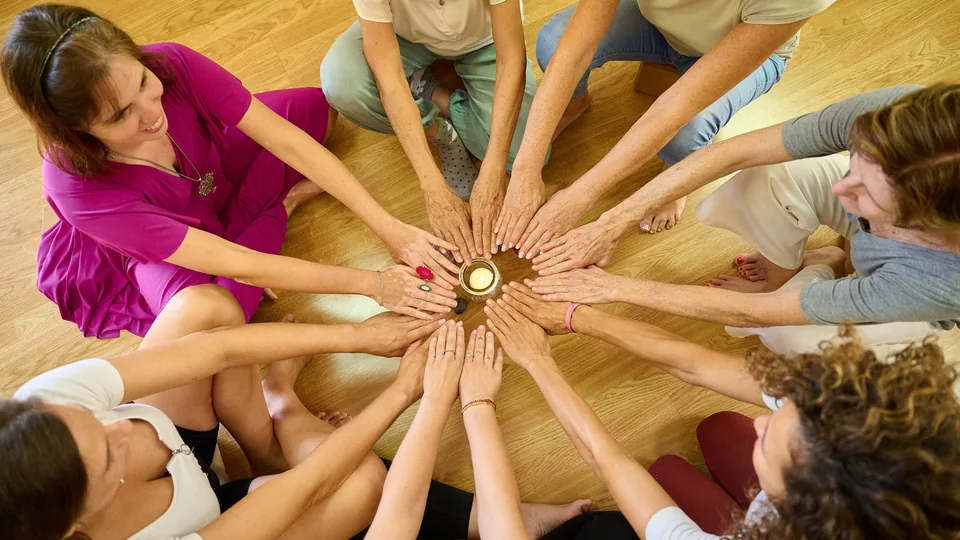

We are born from a simple, deep conviction: within every person there is an extraordinary capacity to learn, grow and create new possibilities for their life.
Our mission is to create spaces that make that process easier.

We design and facilitate training programs, mentoring, workshops, gatherings, events, retreats and immersive experiences, both in person and online.
Our work starts from an integral view of the person. We understand that true growth goes beyond acquiring knowledge: it means knowing yourself, learning to listen to your emotions, recognizing patterns, strengthening inner resources, connecting with your own values and developing the ability to choose with greater awareness.
We create environments where people feel invited to explore, discover, question, integrate and move forward at their own pace.
We believe in personal growth that shows up in everyday life: more conscious relationships, more consistent decisions, greater emotional well-being, a deeper connection with yourself and a greater capacity to live from your own values and potential.
Every person has their own story, their own moment and their own path.
That is why our approach begins with respect, listening and personal autonomy. Our purpose is not to tell anyone who they should be, but to offer tools, experiences and spaces that allow each person to discover more clearly who they are, what they need and where they want to go.
We believe that when a person develops a more conscious relationship with themselves, they also transform the way they relate to others and to their surroundings.
And from there, deeply meaningful change can begin.
Tell us what you need and we will get back to you as soon as possible.